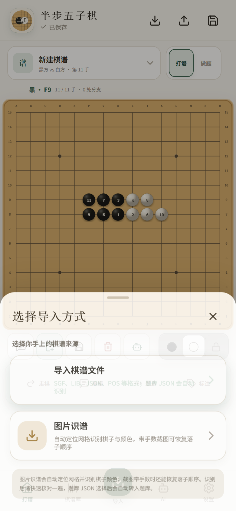
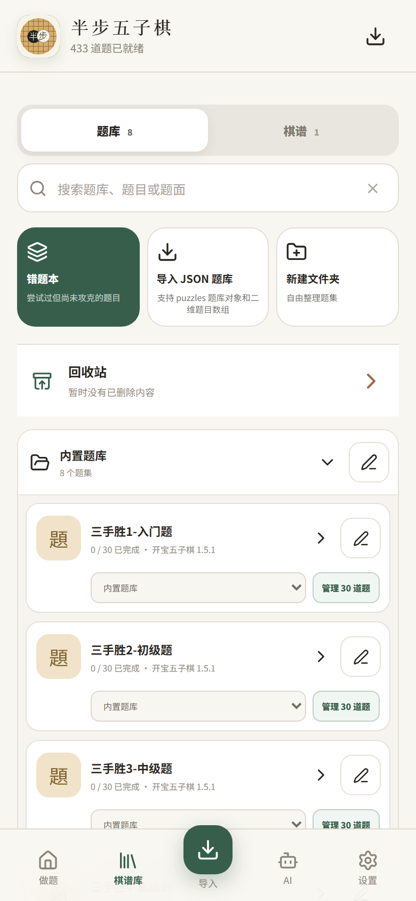
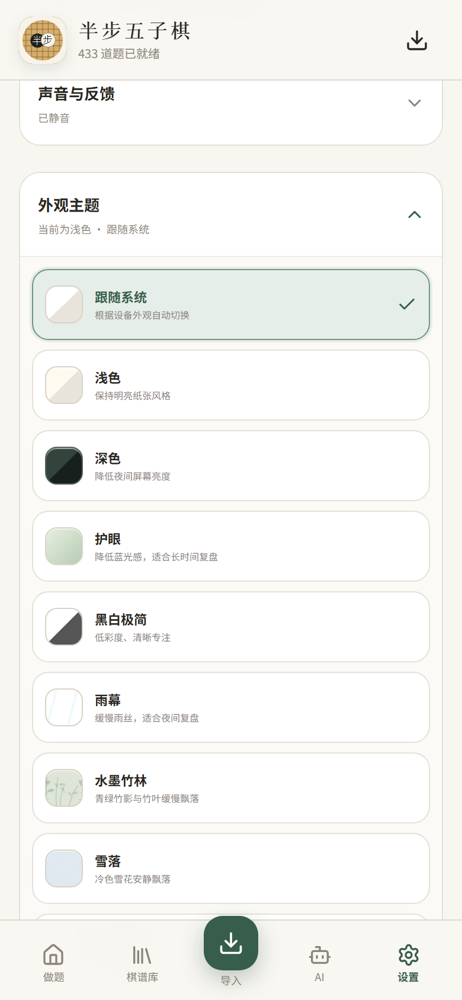
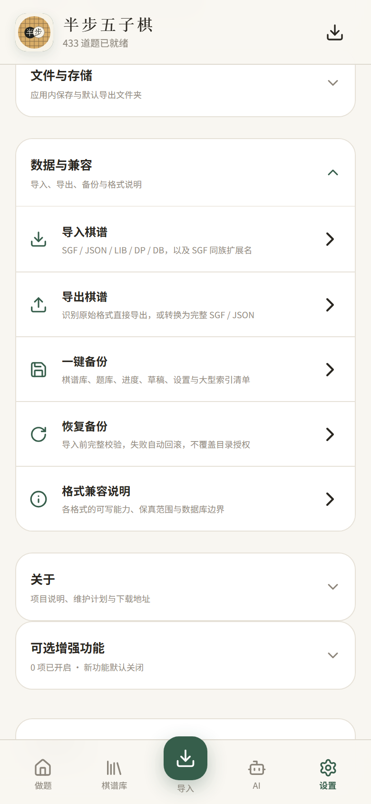

05多格式导入与图片识谱
支持 SGF、RENJU JSON、LIB、DP、DB 等格式，也能从棋盘截图识别局面和落子顺序。
兼容多种棋谱来源，集中管理本地资料，并通过备份与主题设置形成自己的研究环境。

05支持 SGF、RENJU JSON、LIB、DP、DB 等格式，也能从棋盘截图识别局面和落子顺序。

06用文件夹整理棋谱和题集，按标题、棋手、主题或题面搜索，并提供回收站和批量处理。

07浅色、深色、水墨、青花、雪落等多套主题，并可切换棋盘、棋子、音效和动效。

08整包迁移棋谱库、题库、进度、草稿和设置；恢复前完整校验，失败自动回滚。